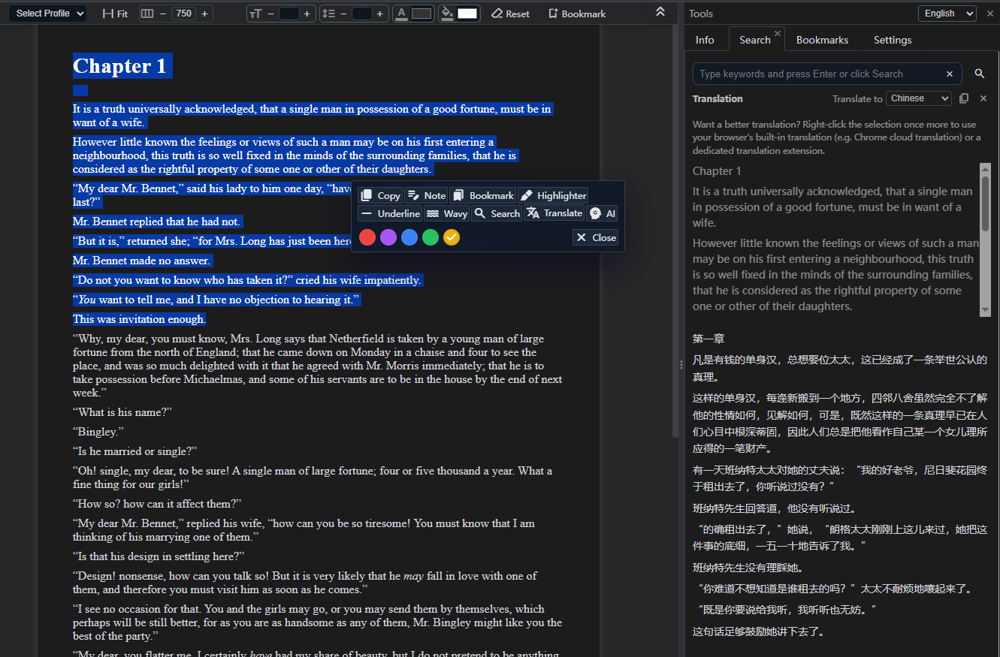

Translate Selection
To understand one sentence or paragraph, you do not need to start a whole-book translation.
How to use it
- Select the text you want translated in the book.
- Click Translate in the selection menu.
- The translation appears immediately.

Character limit
One request translates up to 4,000 characters. Anything longer is stopped locally with a message and no request is sent; select it in parts, or switch to chapter translation.
How it differs from whole-book translation
| Translate Selection | Whole-book translation | |
|---|---|---|
| Range | The passage you selected | Translate while reading / current chapter / whole book |
| Kept? | A temporary result, not written into the book | Shown with the book once translated |
| Good for | Checking a sentence, looking up a word | Reading a paragraph, a chapter or the whole book |